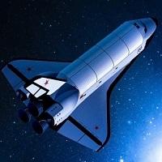

Michał
Pietrzak
Pietrzak
Historia lotów kosmicznych
Wprowadzenie
Rozpoczniemy naszą podróż przez historię lotów kosmicznych, odkrywając fascynujące momenty, niezwykłe osiągnięcia i trudności, z jakimi ludzkość musiała się zmierzyć, aby osiągnąć gwiazdy.
Loty kosmiczne to podróże ludzkości w przestrzeń kosmiczną. Są one możliwe dzięki wykorzystaniu rakiet, które pozwalają na osiągnięcie prędkości niezbędnych do opuszczenia atmosfery Ziemi.
Loty kosmiczne to podróże ludzkości w przestrzeń kosmiczną. Są one możliwe dzięki wykorzystaniu rakiet, które pozwalają na osiągnięcie prędkości niezbędnych do opuszczenia atmosfery Ziemi.
Początki
Pierwsze pomysły na podróże kosmiczne pojawiły się już w starożytności. W mitologii greckiej można znaleźć legendy o podróżach do gwiazd. W średniowieczu natomiast pojawiły się pierwsze teoretyczne prace na temat możliwości lotów kosmicznych
W średniowieczu, wraz z rozwojem nauki i filozofii, pojawiły się pierwsze teoretyczne prace na temat możliwości lotów kosmicznych. Średniowieczni uczonych, inspirując się starożytną mitologią, zaczęli zastanawiać się nad fizycznymi aspektami podróży poza granice atmosfery Ziemi.
W średniowieczu, wraz z rozwojem nauki i filozofii, pojawiły się pierwsze teoretyczne prace na temat możliwości lotów kosmicznych. Średniowieczni uczonych, inspirując się starożytną mitologią, zaczęli zastanawiać się nad fizycznymi aspektami podróży poza granice atmosfery Ziemi.

Pierwsze sukcesy
Pierwszym udanym lotem w przestrzeń kosmiczną była misja radzieckiej sondy Sputnik 1, która została wystrzelona 4 października 1957 roku. Sputnik 1 był pierwszym sztucznym satelitą na orbicie Ziemi.
W 1961 roku Jurij Gagarin został pierwszym człowiekiem, który poleciał w kosmos. Gagarin wystartował na pokładzie radzieckiego statku kosmicznego Wostok 1 i dokonał jednego okrążenia wokół Ziemi.
W 1961 roku Jurij Gagarin został pierwszym człowiekiem, który poleciał w kosmos. Gagarin wystartował na pokładzie radzieckiego statku kosmicznego Wostok 1 i dokonał jednego okrążenia wokół Ziemi.
Obecnie
Obecnie loty kosmiczne są powszechne. Do przestrzeni kosmicznej wysyłane są satelity, które służą do celów komunikacyjnych, naukowych czy wojskowych. W kosmosie pracują również stacje kosmiczne, które są wykorzystywane do prowadzenia badań naukowych.
Stacje kosmiczne, krążące w odległej przestrzeni, stają się kolejnymi bastionami ludzkiej wiedzy. Pełniąc funkcję zaawansowanych laboratoriów, pozwalają na prowadzenie badań w warunkach mikrograwitacyjnych, nieosiągalnych na powierzchni Ziemi.
Stacje kosmiczne, krążące w odległej przestrzeni, stają się kolejnymi bastionami ludzkiej wiedzy. Pełniąc funkcję zaawansowanych laboratoriów, pozwalają na prowadzenie badań w warunkach mikrograwitacyjnych, nieosiągalnych na powierzchni Ziemi.